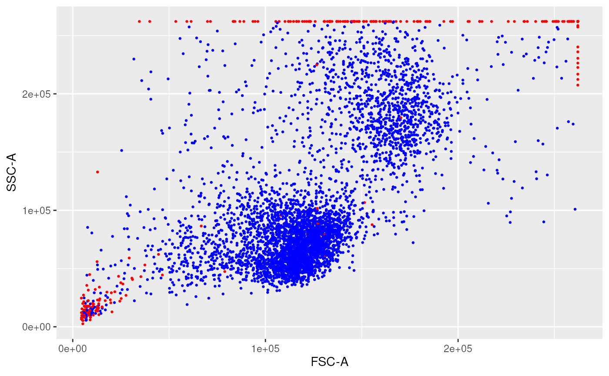

remove margin events using PeacoQC
Source:R/CytoProcessingStepImplementations.R
removeMarginsPeacoQC.RdWrapper around PeacoQC::RemoveMargins(). Also pre-selects the channels to be handled (=> all signal channels) If input is a flowSet, it applies removeMargins() to each flowFrame of the flowSet.
Arguments
- x
a flowCore::flowSet or a flowCore::flowFrame
- channelSpecifications
A list of lists with parameter specifications for certain channels. This parameter should only be used if the values in the internal parameters description is too strict or wrong for a number or all channels. This should be one list per channel with first a minRange and then a maxRange value. This list should have the channel name found back in colnames(flowCore::exprs(ff)), or the corresponding marker name (found in flowCore::pData(flowCore::description(ff)) ) . If a channel is not listed in this parameter, its default internal values will be used. The default of this parameter is NULL. If the name of one list is set to
AllFluoChannels, then theminRangeandmaxRangespecified there will be taken as default for all fluorescent channels (not scatter)- ...
additional parameters passed to PeacoQC::RemoveMargins()
Examples
rawDataDir <-
system.file("extdata", package = "CytoPipeline")
sampleFiles <-
file.path(rawDataDir, list.files(rawDataDir, pattern = "Donor"))
truncateMaxRange <- FALSE
minLimit <- NULL
fsRaw <- readSampleFiles(sampleFiles,
truncate_max_range = truncateMaxRange,
min.limit = minLimit)
suppressWarnings(ff_m <- removeMarginsPeacoQC(x = fsRaw[[2]]))
#> Removing margins from file : Donor2.fcs
ggplotFilterEvents(ffPre = fsRaw[[2]],
ffPost = ff_m,
xChannel = "FSC-A",
yChannel = "SSC-A")
